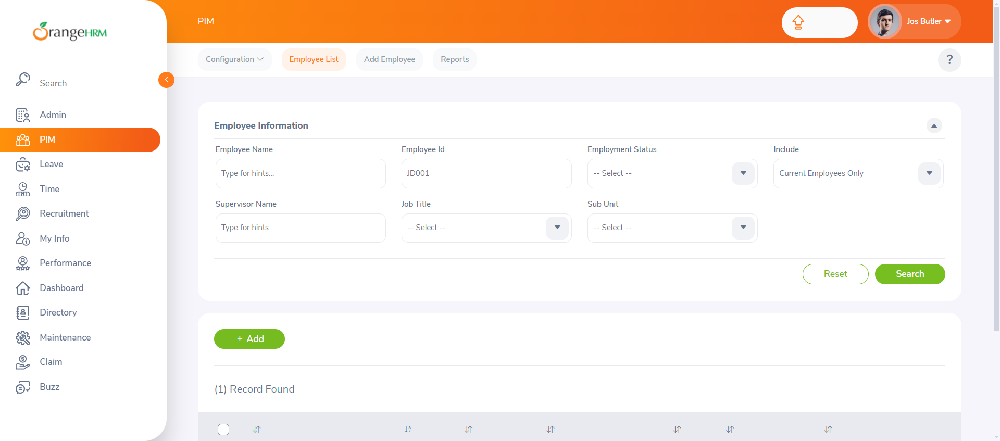
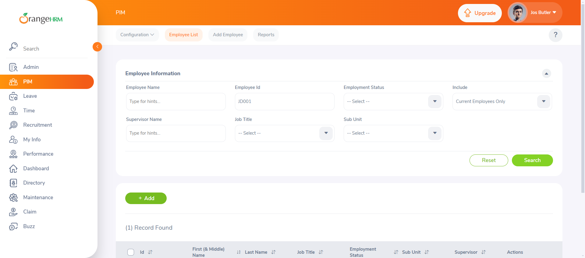

-
Employee Management
12:17:27 am / 00:00:49:003 Fail
Employee Management
11.24.2024 12:17:27 am 11.24.2024 12:18:16 am 00:00:49:003 · #test-id=1FailAdd new employee with mandatory fields onlyGiven the user is logged inAnd navigates to PIM > Add EmployeeWhen the user fills in mandatory fields with First Name "Jane", Last Name "Doe" and ID "JD001"And clicks the Save buttonThen a success popup should be displayed with "Success" in the title and "Successfully Saved" in the messageAnd added employee with id "JD001" is visible in the employee liststepDefinitions.Hooks.addScreenshot(io.cucumber.java.Scenario)imagePassSearch employee by invalid IDGiven the user is on the "Employee List" pageWhen the user enters an invalid ID "InvalidID" in the search boxAnd clicks the Search buttonThen the error message "No Records Found" should be displayedFailEdit employee detailsGiven the user is on the "Employee List" pageWhen the user searches for an employee with ID "JD001"And the user opens the employee profile of "JD001"stepDefinitions.Hooks.addScreenshot(io.cucumber.java.Scenario)imageAnd updates the Address to "456 Maple St" and Phone to "+917654322787"Step skippedAnd clicks the Save buttonStep skippedThen the profile should be updated successfullyStep skippedAnd the new details for ID "JD001" should be visible, Address as "456 Maple St" and Phone as "+9876543"Step skippedFailUpload document to employee profileGiven the user is on the employee profile of "JD001"stepDefinitions.Hooks.addScreenshot(io.cucumber.java.Scenario)imageWhen the user uploads a document "orangeHRM_v1_TestPlan.docx"Step skippedAnd clicks the Save button of attchment sectionStep skippedThen the document should be uploaded successfullyStep skippedAnd the document "orangeHRM_v1_TestPlan.docx" should be visible in the profile of "JD001"Step skippedFailDelete employee recordGiven the user is on the "Employee List" pageWhen the user searches for an employee with ID "JD001"And clicks the Delete button for ID "JD001"stepDefinitions.Hooks.addScreenshot(io.cucumber.java.Scenario)imageAnd confirms the deletionStep skippedThen the employee record with ID "JD001" should be removed from the employee listStep skipped -
User Accounts
12:18:16 am / 00:00:17:898 Pass
User Accounts
11.24.2024 12:18:16 am 11.24.2024 12:18:34 am 00:00:17:898 · #test-id=66PassUser logs in with valid credentialsGiven the user is on the login pageWhen the user enters a valid username "admin" and password "admin123"And clicks the "Login" buttonThen the user should be redirected to the "Dashboard" pagePassUser logs in with invalid credentialsGiven the user is on the login pageWhen the user enters an invalid username "invalidUser" and password "wrongPassword"And clicks the "Login" buttonThen an error message "Invalid credentials" should be displayedPassUser requests password resetGiven the user is on the login pageWhen the user clicks on the "Forgot your password?" linkAnd enters a registered email "user@example.com"And clicks the "Reset Password" buttonThen a password reset confirmation message "Reset Password link sent successfully" should be displayed
-
org.openqa.selenium.StaleElementReferenceException
4 tests
org.openqa.selenium.StaleElementReferenceException
4 failedStatus Timestamp TestName Fail 00:17:38 am And added employee with id "JD001" is visible in the employee list Employee Management.Add new employee with mandatory fields only.And added employee with id "JD001" is visible in the employee listFail 00:17:56 am And the user opens the employee profile of "JD001" Employee Management.Edit employee details.And the user opens the employee profile of "JD001"Fail 00:17:57 am Given the user is on the employee profile of "JD001" Employee Management.Upload document to employee profile.Given the user is on the employee profile of "JD001"Fail 00:18:15 am And clicks the Delete button for ID "JD001" Employee Management.Delete employee record.And clicks the Delete button for ID "JD001"
Started
Nov 24, 2024 12:17:27 am
Ended
Nov 24, 2024 12:18:34 am
Features Passed
1
Features Failed
1
Features
Scenarios
Steps
Timeline